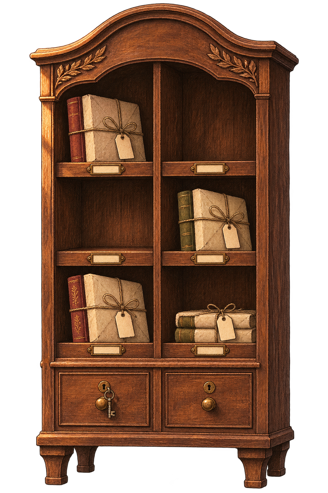
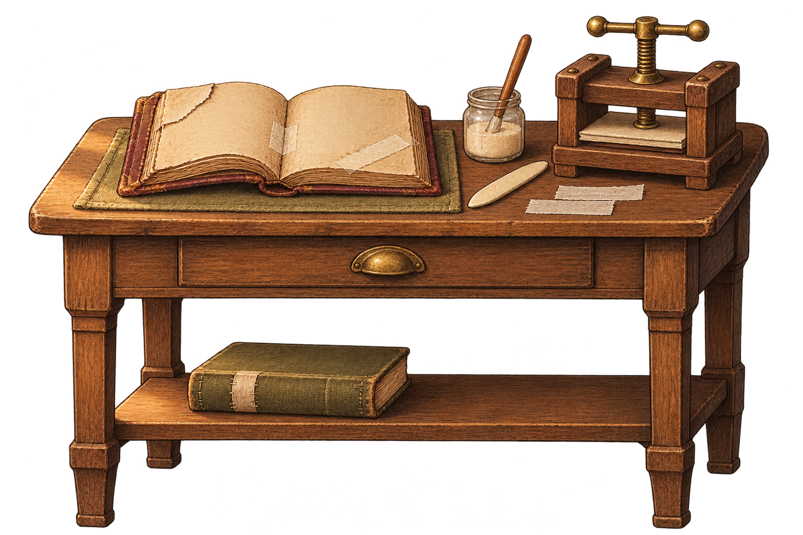

PEÇA 01
Armário de encomendas
Separa os exemplares reservados por título e condição, protegendo as cópias necessárias até a retirada de cada leitor.
Abrir arte original ↗Três propostas em madeira envelhecida, latão e luz âmbar. As imagens têm fundo transparente e foram preparadas para combinar com a atmosfera da loja.

Separa os exemplares reservados por título e condição, protegendo as cópias necessárias até a retirada de cada leitor.
Abrir arte original ↗
Recupera um livro danificado por dia para a condição Usado. Proposta: 2 moedas em materiais por restauração.
Abrir arte original ↗Destaca um tema escolhido para o expediente, aumentando a chance de pedidos compatíveis com o tema e com os gostos dos leitores.
Abrir arte original ↗